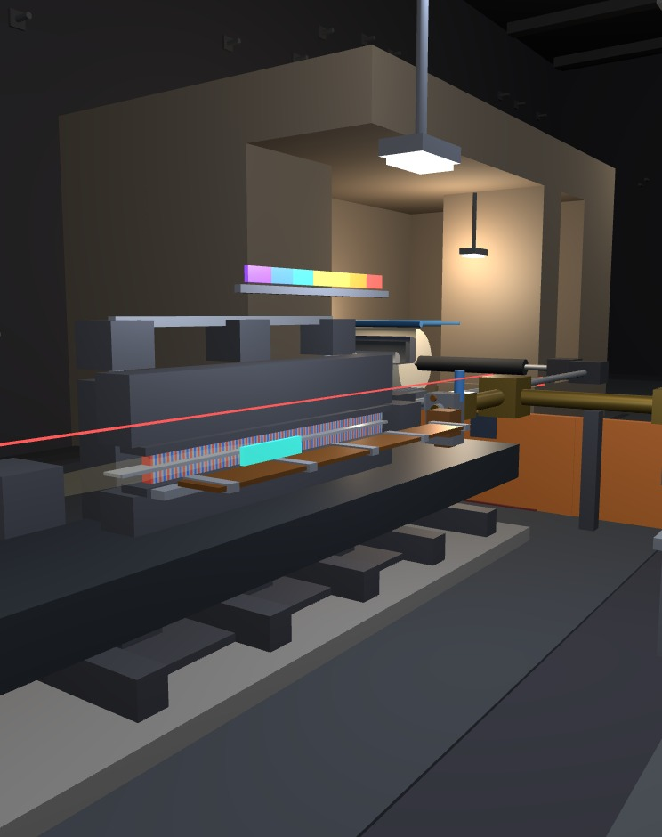
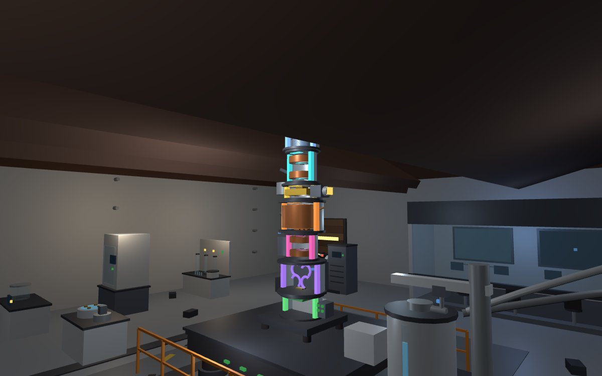
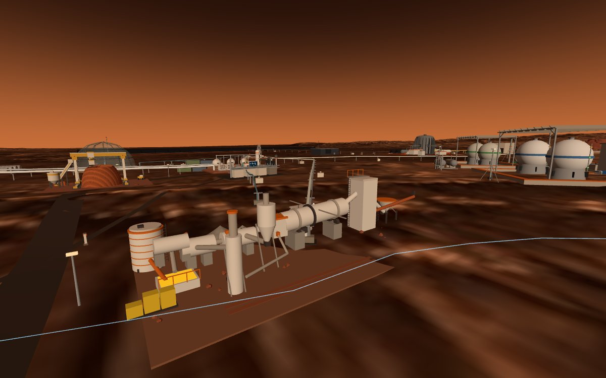
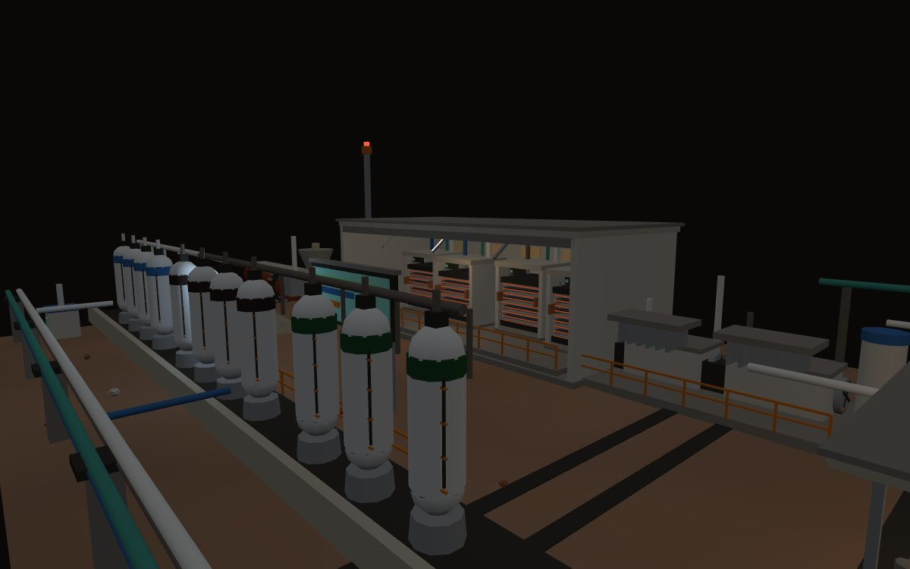
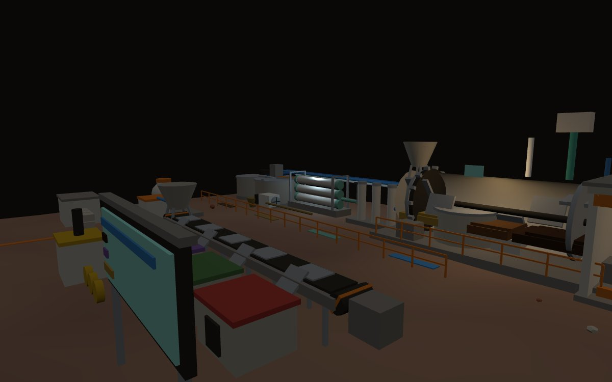
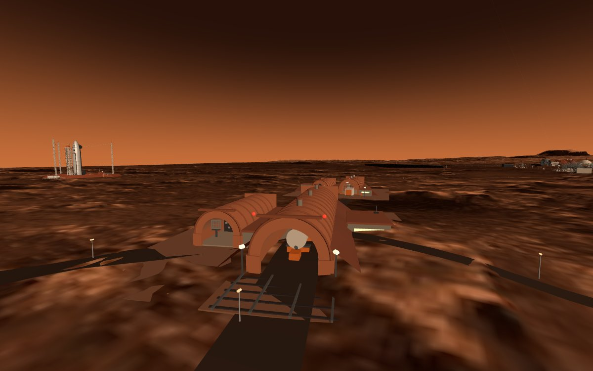
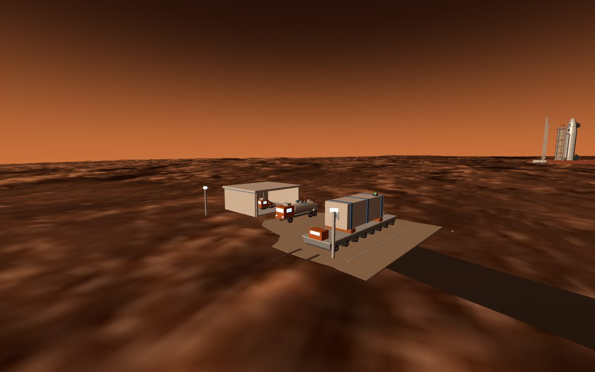

How each one works
Five mechanisms, and for each the one constraint that shaped the geometry.
sci-fel-01A laser you cannot buy, in the band nobody else covers
A free-electron laser has no gain medium. A 37 MeV electron beam is wiggled through 40 periods of a 65 mm permanent-magnet undulator, and the light it emits is set by geometry alone: lambda equals lambda-u over 2 gamma squared, times (1 + K squared over 2). Change the beam energy or open the magnet gap and the colour moves. The published band is 10 to 150 micrometres — continuously tunable across a 15:1 range that no benchtop source spans.
Why not an X-ray FEL? Because 1.5 Angstrom light needs 13.6 GeV, which at room-temperature copper gradients is a 1.7 km machine, and the superconducting alternative needs tonnes of liquid helium. Mars air holds 4 ppm helium: extracting one tonne means processing 1.8e11 cubic metres of atmosphere. That single line vetoed the entire superconducting route, and the infrared machine that survived fits in a 56 by 20 by 12 m cavern and draws 74 kW — 0.042% of the city grid.
The optical cavity is 6.00 m of near-concentric gold mirrors with a hole for out-coupling. The accelerating structure is 1.0 GHz travelling-wave copper, whose shunt impedance was measured in a full-wave eigenmode solve rather than quoted: 37.5 MOhm/m, plus or minus 5%.


Two capabilities on this machine cannot be reproduced by a benchtop source, and both were found late, by running virtual experiments rather than by quoting a brochure. The first is site-selective pumping: nitrogen donors in 4H-SiC sit at 60 and 100 meV, which is 20.7 and 12.4 micrometres, both inside the band and resolvable by the monochromator. The second is peak field: 14 mJ/cm2 in a 0.85 ps micropulse is 1.5e10 W/cm2, or 341 MV/m — 34 times the field-induced transition threshold of vanadium dioxide, which puts a genuinely non-thermal phase transition inside reach. The same number is a warning: it is 114 times the breakdown field of air, so every dielectric part near the focus must be designed for high field.
sci-cryoem-01Buried because rock is quieter than any isolation table
A 300 kV electron has a wavelength of 1.9687 pm — about a hundredth of an atom. The limit is never the wavelength; it is spherical aberration, and the column's Cs of 3.32 mm was computed here by an in-house field solver plus ray tracing, giving a Scherzer point resolution of 2.63 Angstrom and an information limit of 1.51 Angstrom. Routine delivery on a moderately heterogeneous complex is 2.5 Angstrom; well-behaved symmetric samples reach 1.8.
To hold that, the column and stage must not move relative to each other by more than 30 pm rms between 16 and 1000 Hz. The city's own vibration specification is 1.2e-6 m/s/sqrt(Hz) at 10 m, which on a bare floor lands at 47,364 pm — a factor of 1579, or 64 dB, too loud. Three passive stages (1.5 Hz air legs, an 8 t granite block at 4 Hz, in-column mounts at 8 Hz) bring it to 13.3 pm.
But vibration is only the second reason this laboratory is 30 m down. The first is temperature: basalt's diurnal thermal skin depth is 0.156 m and its annual depth 4.04 m, so at 30 m the surface's 60 K swing is simply gone. The resulting stage drift is 2.85e-2 nm/min, 2.8% of spec — 35 times better than a surface room.
Two Mars-specific consequences follow. The instrument's boil-off nitrogen, vented without a thought on Earth, is here 56% of the colony's entire buffer-gas loss; recovering it costs 1.23 kWh/kg against 8.49 to vent and remake. And every Martian sample must pass a perchlorate bench first — not for cleanliness but because magnesium perchlorate brine reaches exactly the 1.35 g/cm3 density of protein at 35 wt%, at which point contrast vanishes entirely.

res-sulfur-01The plant whose real product is oxygen
A rotary kiln 1.3 m across and 11 m long, inclined 4 degrees and turning at 1.5 rpm, roasts sulfate-rich regolith at 900 C in a reducing atmosphere. Hydrogen strips oxygen from the sulfates to make calcium sulfide and water vapour; two Claus converters then recover elemental sulfur at about 97% per pair. Output is 100 kg of sulfur per sol for 63 kWe, or 0.016% of the city's power.
The hydrogen is circulated, not consumed, and the oxygen it strips is finally released in the ISRU electrolyser. That is where the plant's identity flips: every kilogram of sulfur liberates two kilograms of oxygen, so the site quietly delivers 200 kg of O2 per sol while consuming zero water. On the balance sheet it is an oxygen plant that happens to leave sulfur behind.
The other lever is grade, and it is brutal. Producing 1 kg of sulfur means processing 1/(grade times recovery) of ore: 11 kg of the 10 wt% horizon, but 46 kg of ordinary 2.4 wt% soil. Same kiln, same kilowatt, 4.2 times the throughput. Selective bench mining upstream is the cheapest step in the entire chain, and the kiln diameter, the feeder and the whole sensible-heat ledger are all sized off it.

res-eclss-01 + res-recycle-01The pair that closes the loops
These two buildings are the city's arithmetic made physical. A population of 115 — derived from a watch bill, post by post, across every delivered asset — breathes 99.1 kg of oxygen and exhales 118.0 kg of carbon dioxide per sol. Four electrolyser modules answer the first number: two steam SOEC stacks at 4.84 kWh per kg of O2, and two CO2 SOXE stacks, fed on raw Martian atmosphere at 5.60 kWh per kg and no water at all.
The cheapest oxygen in the city, though, comes from a small branch at the west end. Heating magnesium perchlorate to 350–450 C decomposes it exothermically into magnesium chloride and four molecules of O2 — 0.573 kg of oxygen per kg of salt for a marginal 0.24 kWh per kg. The soil's most notorious poison is also its most efficient oxygen warehouse.
What actually costs is buffer gas. Martian atmosphere is 95.1% CO2 and only 2.6% nitrogen, so it takes 29 kg of atmosphere per kg of buffer gas, at 5.27 kWh/kg — the same order as oxygen. That is why the cabin runs a 58/42 nitrogen-argon blend rather than pure nitrogen, and why an airlock retrofit that cuts loss from 181.8 to 66.1 kg/sol is worth a whole ledger.
Next door, water. The recycling plant takes 659 kg/sol of urine, condensate and greywater and returns 647 — 98.2% closure — leaving just 30.3 L/sol of make-up drawn from the Rodwell well, which is 8.0% of it. (ISRU propellant hydrogen takes 50.8%; life support is not what strains the well.) Solid waste goes to zero landfill: plastics pyrolysed to printer filament, textiles shredded as compost bulking, 93.8 kg/sol compacted into the habitat berm as shielding.


ops-vab-01 + ops-payload-01 + veh-ground-01A launch campus that assembles lying down
The rocket is 67 m long. Assembling it vertically would require an 86 m building — in a city whose tallest structure is 20 m. So the hall is a sintered-brick barrel vault, 16 m span, 12.2 m high, 72 m long, and the rocket is built horizontally, lying on the erector-transporter it will ride to the pad.
The vertical work that genuinely needs height already exists 170 m away: the launch complex has an 85 m service tower with five rotating platforms. Building a second tower would have been pure redundancy. Assemble horizontally, transport horizontally, raise at the pad — the same reasoning Falcon 9 and Soyuz arrived at.
The choice propagates. The erector's 62 m beam needs only 6 m of clearance along the route, against the 100 m class a vertical mobile platform would demand. Next door, the payload building encapsulates fairings horizontally too, so its clear height is set by the 5.2 m fairing diameter rather than its 12.5 m length: 10.6 m instead of thirty-something. The vault is buttressed by earth berms, because an arch converts load into thrust along its axis and that thrust has to be resisted — and the same berm gives the walls thermal mass against a 60 K diurnal swing.
On the ground between them runs the only fleet in the city that can move big things: an eight-axle-line modular transporter with a 24 m deck, each line independently levelling so a 5 m diameter stage crosses uneven apron without racking, and a vacuum-jacketed tanker whose 12.8 m3 vessel carries 14.6 t of liquid oxygen or 5.4 t of methane — the same tank, a different placard. Its vapour-return hose alone saves 79 kg per trip.

